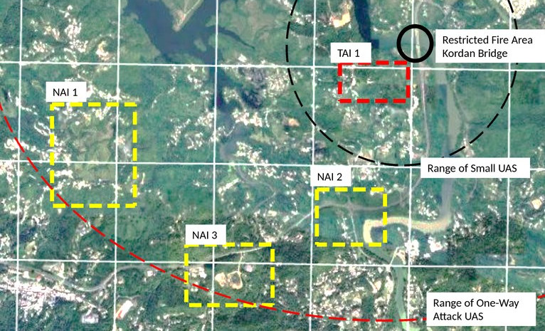

Detect: The Collection Plan
Task your sensors to find the targets, then judge what they report.
The collection plan
The collection plan is how the brigade turns the commander's questions into instructions for the people and the aircraft that can answer them. It is written by the intelligence staff, not by the FSCC, and the fires plan you built in Phase 1 depends on it entirely. Not every question on it is about a target, and not every target is on it.
| Term | What it is |
|---|---|
| Priority intelligence requirement (PIR) | A question the commander must have answered in order to make a decision. |
| Specific information requirement (SIR) | A smaller question. Answer the SIRs and you have answered the PIR. |
| Indicator | What that activity looks like on the ground, written so that a soldier or an aircrew knows it when they see it. |
| Latest time information is of value (LTIOV) | The time after which the answer no longer helps, because the decision it feeds has already been made. |
You have already set one clock. In 1C, timeliness asked how long a location stays good enough to shoot at. LTIOV asks a different question: how late an answer can arrive and still let the commander choose. The same report can pass one and fail the other.

| Area | What we are trying to learn there |
|---|---|
| TAI 1 | Whether an ATGM section occupies the only ground from which he can engage vehicles on the bridge, and whether infantry reinforce there. |
| NAI 1 | Whether the 120 mm mortar platoon occupies the best firing position on this ground. |
| NAI 2 | Whether engineer equipment is moving to the bridge, and what else is moving through the crossroads. |
| NAI 3 | Whether the mortars use the second position, and whether reinforcements are moving through it. |
Task 2.1 — Set the latest time information is of value
NOT DONEEvery column below is filled in except one. For each row, ask which decision the answer feeds, and when the commander makes that decision. Check a row before you move on to the next.
| PIR | SIR | Indicator | Where to look | Who looks | LTIOV | What it triggers |
|---|---|---|---|---|---|---|
| Will the bridge be usable when the lead battalion arrives? | Is the bridge standing now, or are there obstacles? | Destroyed or blocked bridge | Bridge | Scout team | Mission delay or abort. The commander needs to choose another route, or call for engineering vehicles to clear the bridge. | |
| Will the enemy send an engineer team to block or destroy the bridge? | Engineering vehicles, or a team with explosives | NAI 2 | Long-range ISR UAS | If the threat is unmitigated, the friendly force delays their advance. | ||
| Will the enemy block the bridge with an ATGM team? | A small team with a shoulder-fired precision munition | TAI 1 | Scout team, sUAS | If the threat is unmitigated, the friendly force delays their advance. | ||
| Can the enemy mass a counter-attack? | Enemy reinforcements within 3 kilometres of the bridge | Two or more companies of infantry | TAI 1 NAI 2 NAI 3 |
Scout team, sUAS Long-range ISR UAS |
Mission delay or abort while we mitigate, or muster combat power. | |
| A company or more of mechanized or armored vehicles | NAI 2 NAI 3 |
Long-range ISR UAS | Mission delay or abort while we mitigate, or muster combat power. |
Where to look and who looks are read as pairs, line by line. In the last two rows the long-range ISR UAS takes every named area of interest listed, because they lie outside the range of the small UAS.
What each sensor was told to do
The collection plan says what to look for, where, and by when. The synchronization matrix says who is where, hour by hour. These are the surveillance rows of the matrix you built in 1D. The attack rows are left out here, because they belong to Phase 3.
| Asset | T-4 | T-3 | T-2 | T-1 | T=0 | T+1 | T+2 | T+3 | T+4 | T+5 | T+6 | T+7 |
|---|---|---|---|---|---|---|---|---|---|---|---|---|
| Scout team | Kordan Bridge / engineers | TAI 1 / ATGM | ||||||||||
| sUAS | TAI 1 / ATGM | |||||||||||
| Long-range ISR UAS #1 | NAI 2 / engineers | NAI 1 / mortars | NAI 3 / mortars | |||||||||
| Long-range ISR UAS #2 | NAI 1 / mortars | NAI 3 / mortars | NAI 3 / mortars or command post | |||||||||
Engineer team ATGM section 120 mm mortar platoon Battalion command post
A surveillance block names the area being watched and the target expected there. An empty cell means the asset is unassigned and available.